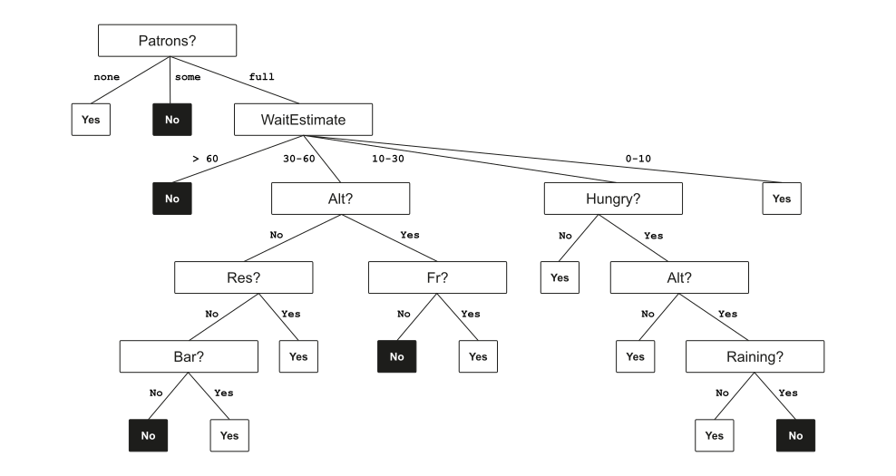

graph LR
%% Binary Decision Tree
B1[Color?] --> B2[Red?]
B2 -->|Yes| B5[Red]
B2 -->|No| B3[Green?]
B3 -->|Yes| B6[Green]
B3 -->|No| B7[Other]
%% Non-Binary Decision Tree
N1[Color?] -->|Red| N2[Red]
N1 -->|Green| N3[Green]
N1 -->|Blue| N4[Blue]
N1 -->|Other| N5[Other]
%% Styling
classDef default font-family:Arial,font-size:10px;
linkStyle default stroke-width:1px,font-family:Arial,font-size:8px;
Introduction
Importance
Decision trees are a fundamental concept in knowledge-based AI agents as they …
- represent a function that maps attribute values to a decision (i.e., transition model),
- use search to find a decision through a sequence of tests, and
- create a model that is inherently explainable.
They constitute a critical part of the AI toolkit by offering both predictive power and interpretability.
Decision trees represent one of the earliest successful machine learning algorithms. Despite newer approaches like deep learning, they remain important due to their explainability and simplicity. Further, decision trees form the foundation of more advanced ensemble methods like Random Forests and Gradient Boosting.
Advantages
Despite being older than many modern ML algorithms, decision trees remain popular due to two key advantages:
- Simplicity: Easy to understand and implement
- Explainability: For a given input, the model not only outputs a decision but explains why this decision was made
Particularly explainability is crucial in fields requiring transparency such as medical diagnosis, financial decision-making, insurance risk assessment, and autonomous driving systems. Here “black box” models are problematic. A decision tree can show exactly which features led to a particular decision, making it easier to validate, audit, and explain to stakeholders or regulators.
Recap: Structure
A decision tree is a representation of a function that maps a vector of attribute values to a single output value (i.e., a “decision”).
- An internal node represents a test of a property
- Branches are labeled with possible values of the test
- Each leaf node specifies the value to be returned if that leaf is reached
In Boolean decision trees, the input is a set of vector of input attributes X and a single Boolean output value y.
Decision trees can handle both classification (discrete output) and regression (continuous output) tasks, though they are more commonly used for classification. The structure naturally leads to “if-then-else” rule sets that are easy to follow.
Example: Restaurant Decision
Consider deciding whether to wait for a table at a restaurant (Russel & Norvig, 2022, p. 668).
The output \(y\) is a Boolean variable \(WillWait\).
The input \(x\) is a vector of ten attributes with discrete values:
- Alternate – Is there an alternative? (T/F)
- Bar – Does the restaurant have a bar to wait in? (T/F)
- Fri – Is it Friday or Saturday? (T/F)
- Hungry – Am I hungry? (T/F)
- Patrons – How many guests are there? (none, some, full)
- Price – How expensive is the food? (€, €€, €€€)
- WaitEstimate – How long do we have to wait? (0-10, 10-30, 30-60, >60)
- Reservation – Have I made a reservation? (T/F)
- Raining – Is it raining outside? (T/F)
- Type – What kind of restaurant is it? (French, Italian, Thai, Burger)
Example decision tree

Underlying training set
| Example | Alt | Bar | Fri | Hun | Pat | Price | Rain | Res | Type | Est | WillWait |
|---|---|---|---|---|---|---|---|---|---|---|---|
| \(x_1\) | Yes | No | No | Yes | Some | €€€ | No | Yes | French | 0-10 | \(y_1 =\) Yes |
| \(x_2\) | Yes | No | No | Yes | Full | € | No | No | Thai | 30-60 | \(y_2 =\) No |
| \(x_3\) | No | Yes | No | No | Some | € | No | No | Burger | 0-10 | \(y_3 =\) Yes |
| \(x_4\) | Yes | No | Yes | Yes | Full | € | Yes | No | Thai | 10-30 | \(y_4 =\) Yes |
| \(x_5\) | Yes | No | Yes | No | Full | €€€ | No | Yes | French | >60 | \(y_5 =\) No |
| \(x_6\) | No | Yes | No | Yes | Some | €€ | Yes | Yes | Italian | 0-10 | \(y_6 =\) Yes |
| \(x_7\) | No | Yes | No | No | None | € | Yes | No | Burger | 0-10 | \(y_7 =\) No |
| \(x_8\) | No | No | No | Yes | Some | €€ | Yes | Yes | Thai | 0-10 | \(y_8 =\) Yes |
| \(x_9\) | No | Yes | Yes | No | Full | € | Yes | No | Burger | >60 | \(y_9 =\) No |
| \(x_{10}\) | Yes | Yes | Yes | Yes | Full | €€€ | No | Yes | Italian | 10-30 | \(y_{10}=\) No |
| \(x_{11}\) | No | No | No | No | None | € | No | No | Thai | 0-10 | \(y_{11} =\) No |
| \(x_{12}\) | Yes | Yes | Yes | Yes | Full | € | No | No | Burger | 30-60 | \(y_{12} =\) Yes |
Note how even with just 12 training examples, we can create a meaningful decision tree. The table shows various scenarios with their attributes and whether the person decided to wait. The decision tree we’ll learn will try to capture the patterns in this data.
Decision-Tree Types
Decision trees can be structured in two ways:
Binary Decision Trees
Each node has exactly two branches (True/False)
- For numeric features: “Is X ≤ threshold?” (e.g., “Pages Viewed ≤ 20?”)
- For categorical features: “Is X = value?” (e.g., “Referrer = Slashdot?”)
Non-Binary Decision Trees
Categorical nodes can have multiple branches
- Each branch corresponds to one possible value
- Often visually simpler but computationally less efficient
Binary trees are usually more efficient in implementation since they map directly to if-then-else statements in code. Non-binary trees require switch-case logic which can be less efficient. However, non-binary trees can be more intuitive for categorical features with many values.
Learning Decision Trees
Inducing Trees
To get a naive solution, we could simply construct a tree with one path to a leaf for each example.
- We test all the attributes along the path and attach the classification of the example to the leaf
- This correctly classifies all examples but doesn’t generalize
- It just memorizes the observations
How can we find a tree that is:
- Consistent with the training set, and
- small as possible to promote generalization?
It’s intractable to find the smallest consistent tree, but decision tree learning algorithms use greedy heuristics to efficiently find a reasonably small tree.
Divide-and-Conquer Strategy
Decision tree learning adopts a greedy divide-and-conquer approach:
- Select the most important attribute to test at the root
- Divide the training set into subsets corresponding to each value of that attribute
- Recursively apply the same process to each subset
The goal is to reach the correct classification with a small number of tests, creating a tree that is both accurate and shallow.
But how do we determine which attribute is most important?
The divide-and-conquer strategy is how we avoid the exponential complexity of finding the optimal tree. By making locally optimal choices at each step, we hope to get a globally good (if not optimal) solution.
Entropy
Entropy comes from information theory and measures the unpredictability of a random variable. In the context of decision trees, we’re interested in the entropy of the class label. When entropy is high, the classes are mixed. When entropy is zero, we have a pure node with only one class present.
Formal: For a random variable \(X\) with possible values \(V(X)\):
\[H(X) = - \sum\limits_{x \in V(X)} p_x \cdot \log_2 (p_x)\]
where \(p_x\) is the probability that \(X\) has value \(x\).
- \(0 \leq H(X) \leq \log_2 (|V(X)|)\)1
- \(H(X) = 0\) means complete certainty
- Maximum value occurs when all outcomes are equally likely
NoteExamples of maximum entropy
For different random variables, the maximum entropy depends on how many values they can take:
- Binary variable (e.g., yes/no decision):
\(\max H(X) = \log_2(2) = 1\) bit
Achieved when \(P(X=\text{yes}) = P(X=\text{no}) = 0.5\) - Variable with 4 possible values (e.g., suit of a card):
\(\max H(X) = \log_2(4) = 2\) bits
Achieved when each value has probability 0.25 - Variable with 8 possible values:
\(\max H(X) = \log_2(8) = 3\) bits
This upper bound is significant in decision tree learning because:
- It tells us the maximum uncertainty possible in a node given the number of classes
- It provides a reference point for measuring information gain
- It helps us understand when a split is most effective (high reduction from maximum entropy)
The difference between the actual entropy and this maximum value indicates how much “structure” or “information” is already present in the data.
Example
Bob is deciding whether to go skiing based on three factors:
snow nearby, weekend, and sunny day.
| Snow near | Weekend | Sun | Go Skiing |
|---|---|---|---|
| yes | yes | yes | yes |
| yes | yes | yes | yes |
| yes | yes | no | yes |
| yes | no | yes | yes |
| no | yes | yes | yes |
| no | yes | yes | yes |
| no | yes | yes | no |
| no | yes | no | no |
| no | no | yes | no |
| no | no | yes | no |
| no | no | no | no |
What is the entropy of the class label Go Skiing?
The entropy of the class label Go Skiing is:
\[H(D) = -(\frac{6}{11} \cdot \log_2(\frac{6}{11}) + \frac{5}{11} \cdot \log_2(\frac{5}{11})) = 0.994\]
The class label Go Skiing has probability 6/11 for yes and 5/11 for no. The resulting entropy is close to 1, indicating high uncertainty (the maximum entropy for a binary variable is 1).
Information Gain
Information gain measures how much the entropy decreases when we split the data based on a particular attribute.
Formal: for a dataset \(D\) and attribute \(X\):
\[G(D,X) = H(D) - \sum\limits_{x \in V(X)} \frac{|D_x|}{|D|} H(D_x)\]
where:
- \(H(D)\) is the entropy of the original dataset
- \(D_x\) is the subset of \(D\) where attribute \(X\) has value \(x\)
- \(|D_x|\) is the size of subset \(D_x\)
- \(H(D_x)\) is the entropy of subset \(D_x\)
The attribute with the highest information gain is the most important attribute.
Example
For Bob’s skiing data, let’s calculate the information gain for the Snow near attribute.
First, split the data based on Snow near”:
- \(D_{yes}\) (4 examples, all Go Skiing = yes, entropy = 0)
- \(D_{no}\) (7 examples, 2 yes and 5 no, entropy = 0.863)
The information gain is:
\(G(D,\text{Snow near}) = 0.994 - \frac{4}{11} \cdot 0 - \frac{7}{11} \cdot 0.863 = 0.445\)
Similarly, we can calculate:
- \(G(D,\text{Weekend}) = 0.150\)
- \(G(D,\text{Sun}) = 0.049\)
Since “Snow near” has the highest information gain, we select it as the root node.
This example shows the complete information gain calculation for one attribute. We first split the data based on whether there is snow nearby, calculate the entropy of each subset, and then determine how much entropy decreased overall. We do the same for the other attributes and select the one with the highest gain.
Building the Tree
After selecting Snow near as our root, we continue the process recursively for each subset.
For \(D_{yes}\) (all examples have Go Skiing = yes):
This is a pure node, so we’re done with this branch
For \(D_{no}\) (mixed yes and no):
- Calculate information gain for remaining attributes on this subset
- Weekend has higher gain (0.292) than Sun (0.169)
- Split on Weekend
- Continue recursively …
%%| fig-cap: "Decision tree for Bob's skiing decisions"
%%| fig-width: 8
%%| fig-height: 6
graph TD
A["Snow near?"] -->|Yes| B["Yes"]
A -->|No| C["Weekend?"]
C -->|Yes| D["Sun?"]
C -->|No| E["No"]
D -->|Yes| F["(2 Yes, 1 No)"]
D -->|No| G["No"]
%% Apply Arial font to all elements including edges
classDef default font-family:Arial,font-size:14px;
linkStyle default font-family:Arial,font-size:12px,fill:none,stroke-width:1px;
%% Node styling
classDef decision fill:#f9f9f9,stroke:#333,stroke-width:1px,font-family:Arial;
classDef yes fill:#d4f4d4,stroke:#060,stroke-width:1px,color:#060,font-family:Arial;
classDef no fill:#f4d4d4,stroke:#600,stroke-width:1px,color:#600,font-family:Arial;
classDef mixed fill:#f4f4d4,stroke:#660,stroke-width:1px,color:#660,font-family:Arial;
class A,C,D decision;
class B,F yes;
class E,G no;
class F mixed;
Gini Impurity
Instead of information gain, the Gini impurity is another common criterion that measures the probability of incorrectly classifying a randomly chosen element if it were randomly labeled according to the class distribution in a subset:
\[\text{Gini}(X) = \sum\limits_{x \in V(X)} p_x(1-p_x)\]
Where \(V(X)\) are the class values in node \(X\) and \(p_x\) is the probability of class \(x\).
Properties:
- Measures the probability of misclassifying a randomly chosen element
- 0 means all elements belong to the same class
- Maximum value occurs when classes are equally likely
- A lower Gini value indicates a “purer” node (more homogeneous)
- Often used in CART (Classification and Regression Trees) algorithm
Gini impurity is another common splitting criterion, especially in the CART algorithm. While entropy measures uncertainty, Gini measures the expected error rate if we randomly classify according to the distribution in the node. In practice, both metrics often yield similar trees, though Gini can be computationally more efficient since it doesn’t use logarithms.
Numerical Attributes
For numerical attributes:
- Sort the values of the attribute in the training set
- Consider all possible thresholds between adjacent values
- Calculate information gain for each threshold
- Select the threshold with the highest information gain
Handling numerical attributes is a key extension to the basic algorithm. Rather than treating each unique numeric value as a separate category, we find the optimal binary split point. This is done by sorting the values and testing each potential threshold between adjacent values. The threshold that maximizes information gain is selected.
Example
Let’s extend Bob’s skiing decision scenario by adding a numerical attribute: Snow Depth (in cm).
| Snow Depth | Weekend | Sun | Go Skiing |
|---|---|---|---|
| 25 | yes | yes | yes |
| 30 | yes | yes | yes |
| 15 | yes | no | yes |
| 35 | no | yes | yes |
| 5 | yes | yes | yes |
| 8 | yes | yes | yes |
| 3 | yes | yes | no |
| 2 | yes | no | no |
| 0 | no | yes | no |
| 1 | no | yes | no |
| 0 | no | no | no |
Finding the Optimal Split for Snow Depth
For numerical attributes like Snow Depth, we need to:
- Sort the values: 0, 0, 1, 2, 3, 5, 8, 15, 25, 30, 35
- Consider all possible thresholds between adjacent values
- Calculate information gain for each threshold
- Select the threshold with the highest information gain
For simplicity, let’s calculate the information gain for just one threshold: Snow Depth ≤ 10 cm
This splits our data into:
- Snow Depth ≤ 10 cm: 7 examples (2 “yes”, 5 “no”)
- Snow Depth > 10 cm: 4 examples (4 “yes”, 0 “no”)
Calculating Information Gain
Original entropy: \(H(D) = - \left( \frac{6}{11} \log_2 \frac{6}{11} + \frac{5}{11} \log_2 \frac{5}{11} \right) = 0.994\)
Entropy after splitting on Snow Depth ≤ 10 cm:
- \(H(D_{\leq 10}) = - \left( \frac{2}{7} \log_2 \frac{2}{7} + \frac{5}{7} \log_2 \frac{5}{7} \right) = 0.863\)
- \(H(D_{> 10}) = - \left( \frac{4}{4} \log_2 \frac{4}{4} + \frac{0}{4} \log_2 \frac{0}{4} \right) = 0\) (Note: \(0 \log_2 0\) is defined as 0 in entropy calculations)
Weighted average entropy after split: \(\frac{7}{11} \cdot 0.863 + \frac{4}{11} \cdot 0 = 0.549\)
Information gain: \(G(D, \text{Snow Depth} \leq 10) = 0.994 - 0.549 = 0.445\)
Resulting Decision Tree
graph TD
A["Snow Depth ≤ 10 cm?"] -->|Yes| B["Weekend?"]
A -->|No| C["Go Skiing: Yes"]
B -->|Yes| D["Sun?"]
B -->|No| E["Go Skiing: No"]
D -->|Yes| F["Go Skiing: Yes/No<br>(2 Yes, 1 No)"]
D -->|No| G["Go Skiing: No"]
classDef default font-family:Arial,font-size:14px;
linkStyle default font-family:Arial,font-size:12px,fill:none,stroke-width:1px;
classDef decision fill:#f9f9f9,stroke:#333,font-familiy:arial;
classDef yes fill:#d4f4d4,stroke:#060,color:#060,font-familiy:arial;
classDef no fill:#f4d4d4,stroke:#600,color:#600,font-familiy:arial;
classDef mixed fill:#f4f4d4,stroke:#660,color:#660,font-familiy:arial;
class A,B,D decision;
class C yes;
class E,G no;
class F mixed;
Key Insights
- Continuous range to binary decision:
The numerical attribute Snow Depth has been converted into a binary decision (≤10 cm or >10 cm) - Threshold selection:
We would typically calculate information gain for all possible thresholds and select the one with the highest gain. For example, we might also check Snow Depth ≤ 4 cm or Snow Depth ≤ 20 cm - Multiple splits possible:
The same numerical attribute can be used multiple times in a decision tree with different thresholds (e.g., first split on Snow Depth ≤ 10 cm and later split on Snow Depth ≤ 5 cm)
In this example, Snow Depth ≤ 10 cm provides the same information gain (0.445) as the original Snow near attribute, making it an equally good choice for the root node.
Recursive Learning Process
In each recursive step of decision tree learning, there are four cases to consider:
- Mixed examples (positive and negative): Choose the best attribute and split
- Pure node (all examples have same class): Create a leaf node with that class
- No examples: Create a leaf with the majority class from the parent node
- No attributes left but mixed classes: Create a leaf with the majority class (handles noisy data)
This process continues until all branches end in leaf nodes.
These four cases cover all possible scenarios during tree construction. Cases 3 and 4 are important for handling edge cases that might arise, particularly with small or noisy datasets. The algorithm is robust because it always has a way to proceed regardless of the data configuration.
Preventing Overfitting
The Overfitting Problem
Decision trees face a fundamental trade-off between data fit and generalization.
- A deeper tree can fit the training data more perfectly
- But a tree that’s too deep might capture noise rather than true patterns
- This results in poor generalization to new data
Overfitting is a critical concept in machine learning. A decision tree that perfectly fits the training data might have learned the noise in the data rather than the underlying pattern. This results in poor performance on new data. Recognizing and preventing overfitting is essential for building useful models.
Pruning Techniques
Pruning reduces the size of decision trees to prevent overfitting.
Pre-pruning
Stop growing the tree while building to limit maximum depth.
- Require minimum samples per node
- Set minimum information gain threshold
Post-pruning
Build the full tree, then remove sections
- Reduced error pruning — replace nodes with their most common class if it doesn’t increase error on a validation set
- Cost-complexity pruning — balance accuracy against tree size using a penalty parameter
Both approaches improve generalization by reducing model complexity.
Performance Assessment
To properly evaluate a decision tree model:
1. Divide your data into separate sets
- Training set (e.g., 70%) — used to build the tree
- Validation set (e.g., 10%) — used for pruning decisions
- Test set (e.g., 20%) — used only for final evaluation
2. Measure accuracy on the test set
3. Use cross-validation2 for more robust assessment
As the training set grows, prediction quality usually increases, then plateaus.
Usage & Extensions
Real-World Applications
Decision trees are used across many domains:
- Finance: Credit scoring, fraud detection
- Healthcare: Disease diagnosis, treatment planning
- Marketing: Customer segmentation, churn prediction
- Operations: Quality control, maintenance scheduling
Their simplicity and interpretability make them particularly valuable when decisions need to be explained to stakeholders.
The practical applications of decision trees are numerous. Their interpretability makes them especially valuable in domains where explanation is important, such as healthcare and finance. Even when more complex models are used for prediction, decision trees are often used to explain those predictions.
Ensemble Methods
Ensemble methods address the limitations of single decision trees by combining multiple trees.
- Random Forests: Build many trees on random subsets of data and features, then average their predictions
- Gradient Boosting: Build trees sequentially, with each tree correcting errors made by previous trees
- AdaBoost: Weight samples based on classification difficulty
These ensemble approaches often dramatically outperform single decision trees while retaining some interpretability.
Strengths and Weaknesses
| Strengths | Weaknesses |
|---|---|
| Easy to understand and interpret | Can create overly complex trees that don’t generalize well |
| Minimal data preparation required | Small changes in data can result in a very different tree |
| Handles both numerical and categorical data | Biased toward attributes with more levels |
| Handles missing values well | Struggles with diagonal decision boundaries |
| Computationally inexpensive | Generally lower accuracy than ensemble methods |
Understanding these trade-offs helps in choosing when to use decision trees.
Summary
- Decision trees represent functions by sequencing attribute tests
- They excel at explainability but can struggle with certain function types
- Tree learning algorithms use information gain to select the most informative attributes
- Pruning techniques help prevent overfitting
- While simple, decision trees form the foundation for powerful ensemble methods
Decision trees balance performance and interpretability, making them a valuable tool in any data scientist’s toolkit.
Exercises
Divide-and-conquer
Create the decision tree by applying the divide-and-conquer approach on the restaurant examples.
Compare the naive tree with the tree gained by applying the divide-and-conquer heuristic. What differences do you see?.
TipSolution note

At each node, we show the positive (light boxes) and negative (dark boxes) examples remaining. (a) Splitting on Type brings us no nearer to distinguishing between positive and negative examples. Type is a poor attribute (b) Splitting on Patrons does a good job of separating positive and negative examples. After splitting on Patrons, Hungry is a fairly good selection test. The full tree would be Patrons, Hungry, Type and Fri.
Decision tree
Explain how decision trees can be used to create a learning agent. Relate your answers to the components outlined in the lecture notes.
We never test the same attribute twice along one path in a decision tree. Why not?
Information Gain
Consider the following dataset about weather conditions and whether tennis matches were played:
| Day | Outlook | Temperature | Humidity | Windy | Play Tennis |
|---|---|---|---|---|---|
| 1 | Sunny | Hot | High | No | No |
| 2 | Sunny | Hot | High | Yes | No |
| 3 | Overcast | Hot | High | No | Yes |
| 4 | Rain | Mild | High | No | Yes |
| 5 | Rain | Cool | Normal | No | Yes |
| 6 | Rain | Cool | Normal | Yes | No |
| 7 | Overcast | Cool | Normal | Yes | Yes |
| 8 | Sunny | Mild | High | No | No |
| 9 | Sunny | Cool | Normal | No | Yes |
| 10 | Rain | Mild | Normal | No | Yes |
| 11 | Sunny | Mild | Normal | Yes | Yes |
| 12 | Overcast | Mild | High | Yes | Yes |
| 13 | Overcast | Hot | Normal | No | Yes |
| 14 | Rain | Mild | High | Yes | No |
- Calculate the entropy of the Play Tennis attribute for the entire dataset.
- Calculate the information gain for each of the four attributes (Outlook, Temperature, Humidity, Windy).
- Which attribute should be selected as the root node of the decision tree?
- Draw the first level of the decision tree.
- For the Outlook = Sunny branch, calculate which attribute should be tested next.
TipHint
For the entropy calculation, count how many Yes and No instances there are in the Play Tennis column. Remember that the entropy formula is:
\[H(X) = - \sum\limits_{x \in V(X)} p_x \cdot \log_2 (p_x)\]
For information gain, you’ll need to split the data based on each attribute value and calculate the weighted entropy.
Numeric Attributes
Consider the following dataset for predicting credit risk based on income and debt levels:
| Customer ID | Income (1000€) | Debt (1000€) | Credit Risk |
|---|---|---|---|
| 1 | 45 | 10 | Low |
| 2 | 32 | 12 | Low |
| 3 | 85 | 15 | Low |
| 4 | 38 | 20 | High |
| 5 | 48 | 28 | High |
| 6 | 29 | 18 | High |
| 7 | 56 | 5 | Low |
| 8 | 22 | 10 | High |
| 9 | 70 | 8 | Low |
| 10 | 35 | 25 | High |
- List all potential splitting thresholds that should be considered for the Income attribute.
- Calculate the information gain for the threshold Income ≤ 40.
- List all potential splitting thresholds for the Debt attribute.
- Calculate the information gain for the threshold Debt ≤ 15.
- Which numerical split would be chosen for the root node of the decision tree?
TipHint
For numerical attributes, consider threshold values that are midpoints between adjacent values in the sorted list of values. For example, if you have values 10, 15, and 20, the potential thresholds would be 12.5 and 17.5.
Decision Boundaries
Consider a two-dimensional feature space with two attributes: x₁ and x₂. The following points represent different classes:
- Class A: (2,3), (3,2), (3,3), (4,3)
- Class B: (1,1), (2,1), (2,2)
- Class C: (4,1), (4,2), (5,1), (5,2)
- Visualize these points in a 2D coordinate system.
- Construct a decision tree with a maximum depth of 2 (counting the root as depth 0) that separates the classes as well as possible.
- Draw the decision boundaries created by your tree on the 2D plot.
- What is the classification accuracy of your tree on the training data?
- If a new point (3,1) is encountered, how would your tree classify it?
TipHint
Start by identifying the best horizontal or vertical split that separates the classes. Then, apply the same process to each resulting region. The decision boundaries will form axis-parallel lines in the 2D space.
Pruning
Consider the following decision tree trained on a small dataset:
graph TD
A[Age ≤ 30?] -->|Yes| B[B; Income ≤ 40K?]
A -->|No| C[C; Income ≤ 60K?]
B -->|Yes| D[D; Buy = No<br>3/4 correct]
B -->|No| E[E; Education?]
C -->|Yes| F[F; Education?]
C -->|No| G[G; Buy = Yes<br>5/6 correct]
E -->|High| H[H; Buy = Yes<br>2/2 correct]
E -->|Low| I[I; Buy = No<br>1/1 correct]
F -->|High| J[J; Buy = Yes<br>3/4 correct]
F -->|Low| K[K; Buy = No<br>2/3 correct]
The tree makes some errors on the training data, as indicated by the fractions (e.g., “3/4 correct” means the node correctly classifies 3 out of 4 training examples that reach that node).
You also have a validation set with the following distribution:
| Node | Validation examples | Correctly classified |
|---|---|---|
| D | 8 | 5 |
| H | 3 | 2 |
| I | 2 | 1 |
| J | 6 | 3 |
| K | 5 | 3 |
| G | 10 | 7 |
- Calculate the classification accuracy of the unpruned tree on the validation set.
- Identify which nodes, if any, should be pruned.
- Explain why pruning improved or worsened the performance.
TipHint
In reduced error pruning, replace a node with its most common class if doing so doesn’t decrease accuracy on the validation set. Start with the leaf nodes and work your way up. For each non-leaf node, calculate the accuracy before and after replacing it with a leaf.
No subtree pruning improves accuracy, so no pruning should be applied.
Literature
Russel, S., & Norvig, P. (2022). Artificial intelligence: A modern approach. Pearson Education.